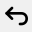
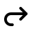
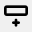
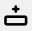
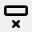
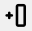
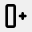
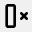

CSV++ - Uputstvo za upotrebu
Meni Fajl
- Novo (Ctrl+N) - Napravi novu praznu CSV datoteku
- Otvori (Ctrl+O) - Otvori postojeću CSV datoteku
- Sačuvaj (Ctrl+S) - Sačuvaj trenutnu datoteku
- Zatvori - Zatvori trenutnu datoteku
- Izlaz - Izađi iz aplikacije
Meni Podešavanja
- Kodiranje - Izaberi kodiranje datoteke (ANSI, UTF-8, UTF-16)
- Separator - Izaberi separator kolona (Zapeta, Tačka-zapeta, Tab, Ostalo)
- Jezik - Prebaci između engleskog i srpskog jezika
Dugmad na alatnoj traci
- Novo - stvaranje nove prazne tabele
- Otvori - Otvori postojeću CSV tabelu
- Sačuvaj - Sačuvaj trenutnu tabelu u CSV fajl


Poništi/Ponovi - Poništi ili ponovi poslednje akcije
Dodaj red ispod - Ubaci novi red ispod selektovane ćelije
Dodaj red iznad - Ubaci novi red iznad selektovane ćelije
Obriši red - Obriši selektovani red
Dodaj kolonu levo - Ubaci novu kolonu levo od selektovane ćelije
Dodaj kolonu desno - Ubaci novu kolonu desno od selektovane ćelije
Obriši kolonu - Obriši selektovanu kolonu- Veličina fonta - Promeni veličinu fonta tabele (8-24)
- Redovi - Postavi ukupan broj redova u tabeli. Povećanjem dodajete prazne redove na dnu tabele; smanjenjem uklanjate redove sa dna tabele (prikazuje se upozorenje ako ti redovi sadrže podatke)
- Kolone - Postavi ukupan broj kolona u tabeli. Povećanjem dodajete prazne kolone na desnoj strani tabele; smanjenjem uklanjate kolone sa desne strane tabele (prikazuje se upozorenje ako te kolone sadrže podatke)
Kontekst meni (desni klik)
- Klikni desnim tasterom na bilo koju ćeliju za brzi pristup operacijama dodavanja i brisanja redova i kolona
- Klikni desnim tasterom na naziv kolone da bi je preimenovao
Uređivanje ćelija
- Klikni na ćeliju da je selektuješ
- Nakon selektovanja nije potrebno da pritisneš Enter ili sl, možete odmah početi sa unosom teksta
- Klikni desnim tasterom na naziv kolone i izaberi Preimenuj kolonu da je preimenuješ
- Pritisni Tab za prelaz na sledeću ćeliju; kada ste na poslednjoj ćeliji u redu, Tab prelazi na prvu ćeliju narednog reda
Statusna traka
- Prikazuje broj redova i kolona u vašoj tabeli
- Prikazuje trenutno kodiranje fajla i separator kolona
- Prikazuje koordinate trenutno izabrane ćelije u zagradi - [kolona,red]
Saveti
- Izbor jezika se automatski čuva u memoriji računara
- Prilikom promene veličine kolona, širina kolone se automatski prilagođava sadržaju
- Prilikom promene broja redova ili kolona, novi elementi se dodaju na kraju tabele, a ako se smanjuje broj redova ili kolona, prikazuje se upozorenje ako ti redovi ili kolone sadrže podatke
- Datoteke mogu biti otvorene prevlačenjem istih u prozor aplikacije
- Aplikacija pamti do 50 undo/redo akcija